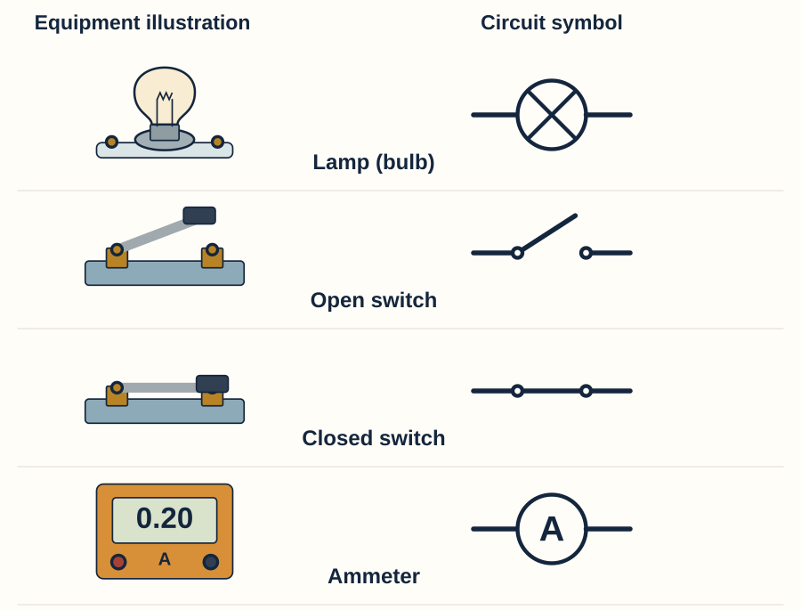
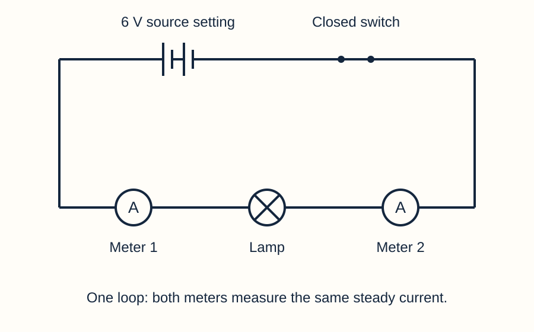

Equipment and symbols
Use standard symbols. Join component terminals with ruled wires. A junction dot means joined paths; a crossing without a dot is not a connection.


A voltmeter uses V in a circle and connects across two points.

Paths and meters



Use Circuit Lab’s Symbols button for a diagram view. Tap terminals to connect them; focused components can be moved with the arrow keys. You may direct a partner or scribe while explaining each connection.
Answers stay in this browser where saving is available. Download or print to keep a copy. Printed pupil sheets omit model answers.